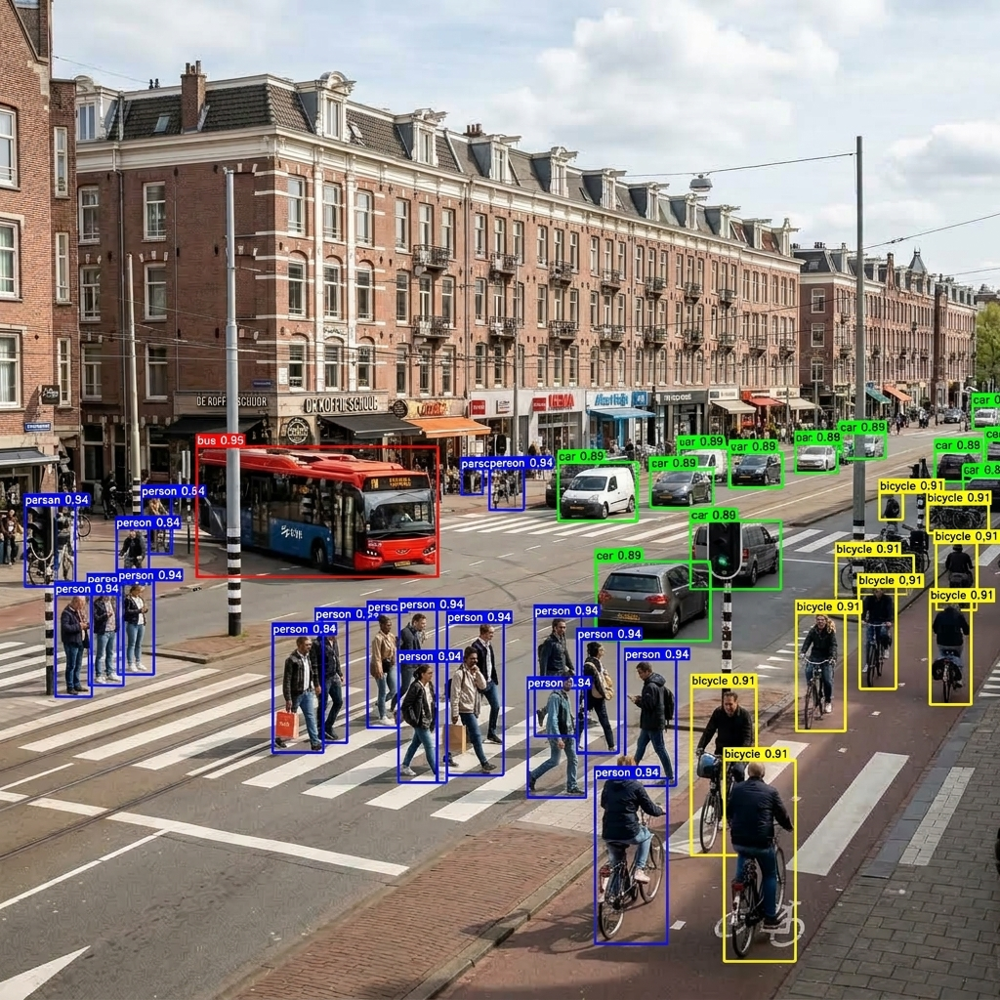
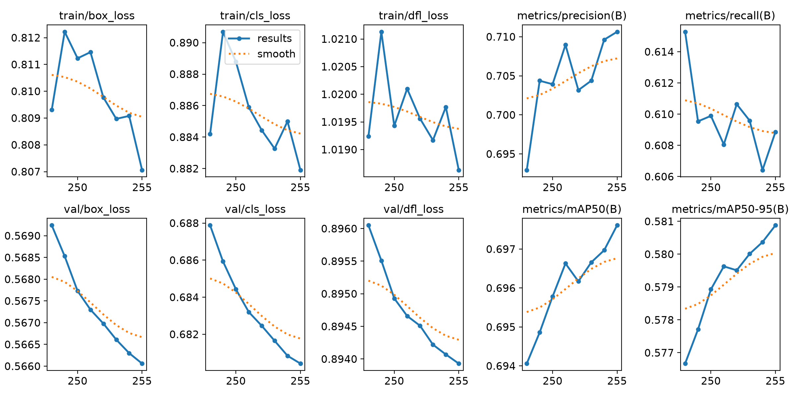

Category 09 VISION | Architecture of LemGendary AI
The LemGendary YOLOv8n Multi-Task Model provides a lightweight, anchor-free
visual perception engine capable of simultaneous object detection, categorical
classification, and 17-point human keypoint pose estimation. Operating on the
compiled manifold LemGendizedYoloV8n, the network replaces heuristic anchor
boxes with continuous bounding box distribution modeling. Decoupled detection
heads eliminate task conflicts between classification and spatial regression,
achieving high-throughput inference (< 8ms on consumer GPUs) suitable for
real-time edge processing.
Imagine having an intelligent security guard scanning a video camera 60 times every second. YOLOv8n ("You Only Look Once" Nano) is an ultra-fast, real-time object detector:

The detection and pose estimation pipeline decomposes input scenes into
multi-scale spatial feature hierarchies [THEORETICAL]:
The backbone utilizes modified CSPDarknet53 with C2f modules that split feature channels across residual bottleneck branches, maximizing gradient flow while minimizing memory bandwidth. The neck employs a Path Aggregation Network (PANet) fusing multi-scale feature hierarchies $P_3, P_4, P_5$ via top-down and bottom-up pathways.
The LemGendary YOLOv8n is a high-throughput, anchor-free real-time object detection and pose estimation engine, trained with curriculum scaling across 320px to 640px resolutions.
[MEASURED]LemGendizedYoloV8nLarge[CURRENT][MEASURED] (Target: $\ge 0.540$ [TARGET])[MEASURED] (Target: $\ge 0.390$ [TARGET])[MEASURED][MEASURED][MEASURED]
Figure: Training Convergence & Loss Metrics for YOLOv8n Detection (Epochs 1–265).Training YOLOv8n within the LemGendary ecosystem is managed by the
YOLOCurriculumGovernor (training/governance/yolo_governor.py), ensuring that
Ultralytics inner-loop optimizations are preserved while outer-loop governance
drives systematic curriculum learning:
rung_plateau_patience, rung_min_epochs,
rung_plateau_min_delta). In addition, at every fraction the governor
continuously monitors for overfitting signatures (e.g. decreasing training
loss alongside rising validation loss over a 3-epoch window, or validation
mAP stagnation). Upon detection, the governor halts the partial stage early
(trainer.stop = True) and immediately triggers dataset expansion to
introduce sample variety and rescue model generalization.static_vram_mb, per_sample_vram_mb_640,
sawtooth_vram_safety, sawtooth_vram_pressure_thresh,
sawtooth_vram_headroom_thresh, batch_min, batch_max) are externalized
to unified_models_v2.yaml. In addition, runtime VRAM pressure is sampled
via torch.cuda.max_memory_allocated(): if usage crosses $\ge 90\%$,
minibatches are dynamically halved; when headroom $< 60\%$ is detected, batch
allocations are promoted up to the safe hardware ceiling.check_amp()) can
produce unstable gradient scaling and degenerate NaN losses. The governor
automatically overrides AMP on these devices, forcing numerical precision to
FP32 (amp=False).LemGendaryModels/yolov8n/metrics.csv and sidecar WebSockets, feeding live
convergence dashboards.best.pt, best.pth, last.pt, progress.pth, and
curriculum_state.json) along with confusion matrices
(confusion_matrix.png, confusion_matrix_normalized.png) and validation
curves strictly to LemGendaryModels/yolov8n/ on every epoch and stage
transition, ensuring instant discovery by the Studio GUI.on_train_batch_end
hook instructing the Ultralytics trainer to halt immediately
(trainer.stop = True) upon operator cancellation signals, preventing
runaway GPU iterations mid-epoch.Prior to v16.9.13, initiating training with pre-existing weights could risk restarting the epoch counter or jumping across resolutions prematurely. The v16.9.13 Resumption Protocol provides rigorous multi-fraction checkpoint inspection and mid-stage resumption:
torch.load(..., map_location="cpu")) to interrogate training metadata,
including epoch (last completed epoch), train_args.imgsz (resolution
rung), train_args.fraction (dataset fraction), and train_args.epochs
(target epochs).metrics.csv indicates that
stage $k$ (e.g. $320\text{px}$ at $30\%$ fraction) has been superseded, that
is, training has progressed to a higher fraction or higher resolution rung (a
stage is never considered complete by epoch count), the governor logs
completion and skips directly to the active ladder stage without redundant
iterations.last.pt, restores optimizer, scaler and EMA state through
trainer._load_checkpoint_state, and continues from global epoch
$\text{ckpt\_epoch} + 2$. resume = True is deliberately not used because
Ultralytics would reset the epoch budget to the previous stage-local value.trainer.start_epoch and trainer.epochs at
on_pretrain_routine_end and aligns the learning-rate scheduler, so the
Ultralytics progress bar, the Governor banner
(Global Epoch N/M | Stage k/13 | Rung Epoch r | Plateau Watch s/5),
metrics.csv and WebSocket telemetry report identical epoch numbers.Validation, replacing the raw metric column header in the progress bar, and
an epoch summary line reports train loss, validation loss (box, cls, dfl),
mAP50 and mAP50-95 at every epoch end.LemGendaryModels/)The ecosystem designates LemGendaryModels/yolov8n/ as the single authoritative
persistence root:
LemGendaryModels/yolov8n/checkpoints/ (best.pt, best.pth, last.pt,
progress.pth, and curriculum_state.json). Checkpoint files are excluded
from the root directory to maintain isolation.LemGendaryModels/yolov8n/metrics.csv.mAP50 >= 0.54, mAP50-95 >= 0.39), the model is exported as both
native PyTorch (yolov8n.pt) and optimized ONNX (yolov8n.onnx) directly to
LemGendaryModels/yolov8n/.[TARGET]; Baseline (COCO val2017): 0.373 [MEASURED]; Inference
Latency (GTX 1650): 7.2 ms; Status & Verification: SOTA Target[TARGET]; Baseline (COCO val2017): 0.525 [MEASURED]; Inference
Latency (GTX 1650): 7.2 ms; Status & Verification: SOTA Target[TARGET]; Baseline (COCO val2017): 76.8% [MEASURED]; Inference Latency
(GTX 1650): 3.1 ms; Status & Verification: SOTA Target[TARGET]; Baseline (COCO val2017): 0.801 [MEASURED]; Inference
Latency (GTX 1650): 8.4 ms; Status & Verification: SOTA Target[TARGET]; Baseline (COCO val2017): 0.504 [MEASURED]; Inference
Latency (GTX 1650): 8.4 ms; Status & Verification: SOTA TargetYOLOv8n Multi-Task unifies spatial detection, categorization, and human pose estimation within a resilient, anchor-free framework optimized for universal hardware, governed curriculum progression, and authoritative persistence across the LemGendary ecosystem.
LemGendizedYoloV8nLarge)